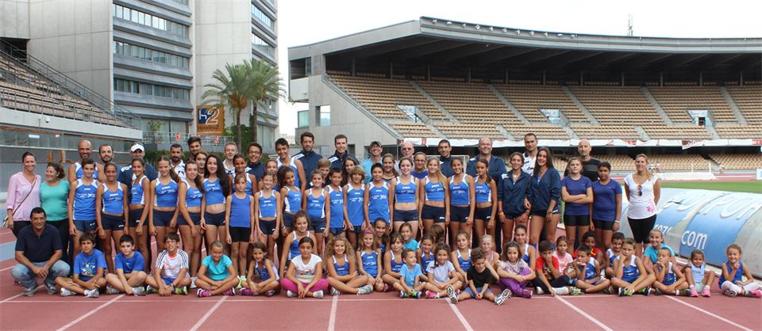

Quiénes somos
Pasión, formación y comunidad
Nuestro club nació con el objetivo de promover el atletismo desde la base, ofreciendo un entorno donde deportistas de todas las edades puedan desarrollarse, superarse y disfrutar del deporte.
Creemos en el esfuerzo diario, en el trabajo en equipo y en los valores que el atletismo aporta para la vida.
Nuestros valores
Esfuerzo
Damos lo mejor de nosotros cada día para alcanzar nuestras metas.
Trabajo en equipo
Creemos en la fuerza del grupo y en el apoyo mutuo para crecer juntos.
Disciplina
La constancia y el compromiso son la clave para lograr grandes resultados.
Superación
Nos enfrentamos a nuevos retos cada día con la ambición de mejorar.

Desde 1989
Nuestra historia
El Club Atletismo Chapín Jerez, fundado en 1989, es una entidad deportiva que tiene como finalidad la promoción y difusión del deporte, especialmente del atletismo, participando en todas las diferentes competiciones atléticas del calendario nacional, tanto a nivel de clubes como individual.
Palmarés
Campeones de España
División de Honor
Campeón de España de la liga de clubes durante 8 temporadas consecutivas
2000-01, 01-02, 02-03, 03-04, 04-05, 05-06, 06-07 y 07-08.
Copa del Rey
Campeón de la Copa del Rey en pista cubierta
Temporadas 01-02, 02-03 y 03-04.
Cross corto
Campeonato de España de Campo a Través, en su modalidad de Cross Corto
Temporadas 03-04, 04-05 y 07-08.
Media maratón
Campeón de España en ruta (media maratón)
Temporada 09/10 (Sagunto 2010). Subcampeón de España en la temporada 08-09 (Motril 2009).
Andalucía
Doble campeón de Andalucía: cross corto y cross largo
Temporada 09-10.
Europa
Subcampeón de Europa Junior por equipos en pista
Méritos
Reconocimientos y premios
Galardonado 6 veces mejor Club de España en categoría masculina en las temporadas 2001-02, 02-03, 03-04, 04-05, 05-06 y 06-07.
En el año 2008, ha recibido dos premios más por su trayectoria deportiva:
2008
Premio a la Gesta Deportiva por la Asociación Andaluza de Prensa Deportiva
2008
Premio al mejor club de la provincia por la Asociación de periodistas de la provincia de Cádiz
Únete
Ven a formar parte de la historia
Escríbenos o llámanos y te contamos cómo unirte al club.